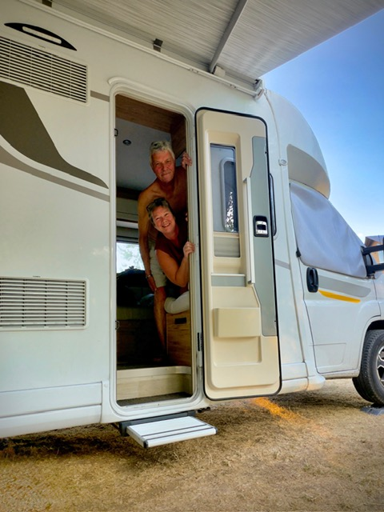

Allemagne
Road trip
La Route des Contes de Grimm
Maisons à colombages, châteaux, villages de carte postale et petites surprises en chemin : notre road trip en Allemagne à bord de Léon.
Voir notre voyage sur Polarsteps →Voyager • découvrir • raconter
Bienvenue à bord de Léon. Des escapades en camping-car, des carnets de route et des idées pour prendre la route sans forcément aller au bout du monde.
Bienvenue à bord
On voyage au gré de nos envies, parfois loin, parfois juste à côté. Des routes, des détours, de belles découvertes… et surtout des souvenirs à partager.
Sur la route
Quelques idées pour commencer à explorer nos escapades.
Road trip
Maisons à colombages, châteaux, villages de carte postale et petites surprises en chemin : notre road trip en Allemagne à bord de Léon.
Voir notre voyage sur Polarsteps →Été 2025
Un été en Europe centrale et au fil du Danube, entre belles étapes, paysages, villes de caractère et détours qui donnent envie de prolonger la route.
Voir notre voyage sur Polarsteps →Grand voyage
Des paysages immenses, la NC500, l'île de Skye et cette furieuse envie de s'arrêter tous les cinq kilomètres.
Voir notre voyage sur Polarsteps →Escapade
Entre canaux, moulins, petites villes pleines de charme et paysages typiquement hollandais, une escapade à la découverte des Pays-Bas.
Voir notre voyage sur Polarsteps →Escapades
Alsace, Jura, Bretagne et autres détours : nos idées de balades à garder sous le coude.
Explorer →Carnets de route
Nos carnets racontent les voyages comme nous les vivons : où nous nous arrêtons, ce que nous visitons, ce qui vaut vraiment le détour et les petits ratés qu'aucun guide ne prévoit.
Les carnets arrivent bientôt →Le meilleur itinéraire est parfois celui qu'on modifie en chemin.
La vie avec Léon
Aires, campings, spots et nos retours d'expérience sans langue de bois.
Organisation, équipements et petites habitudes qui rendent le voyage plus simple.
À pied, à vélo ou en laissant Léon se reposer : nos façons de découvrir une étape.
Conseils & astuces
Garder une trame, mais laisser assez de place aux coups de cœur.
Accès, stationnement, services et distance du centre : nos critères pratiques.
Internet, applis utiles et solutions testées sur la route.
Parce qu'un road trip n'est pas une course au nombre de kilomètres.

À propos
Derrière Léon se balade, il y a nous deux… et une sérieuse envie de voir ce qu’il y a un peu plus loin.
Pas besoin de traverser la planète pour avoir l’impression d’être ailleurs. Parfois, quelques kilomètres suffisent. D’autres fois, Léon nous emmène beaucoup plus loin, sur les routes de France et d’Europe.
On aime les beaux paysages, les villes qui méritent qu’on s’y attarde, les endroits découverts presque par hasard et les itinéraires qui changent en cours de route.
Ce site, c’est notre façon de garder une trace de tous ces kilomètres, de nos découvertes et de ces endroits qui nous ont donné envie de prolonger l’étape.
Bienvenue à bord de Léon ! ♡
On se retrouve ?
Les nouvelles étapes, les photos et les petits moments de voyage sont aussi sur nos réseaux.